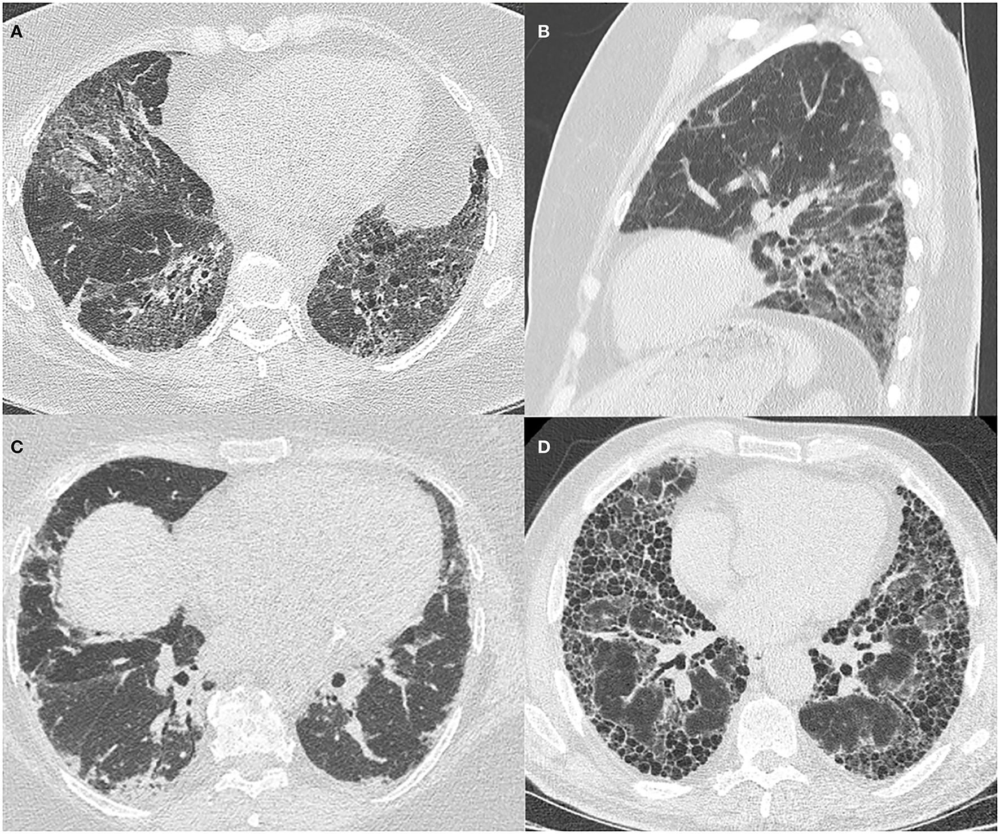

Página 12 · E8
Jo-1, DPI e o fechamento da matriz
“Parece DM, anti-Jo-1 positivo e dispneia — crava-se câncer de pulmão?”
Antissintetase: a irmã perigosa
Existe espectro vizinho às miopatias inflamatórias: síndrome antissintetase — discute-se se é espectro da DM ou doença separada; para prova, o que importa é reconhecer e mudar o alvo da preocupação. Quadro clínico semelhante à DM — inclusive a pele pode ser igual. Se a pele pode ser igual, heliótropo/Gottron “100% patognomônicos isolados” merecem cautela de fronteira — o conjunto e o sorológico decidem o ramo.
Na antissintetase, a preocupação central não é neoplasia: é a doença pulmonar intersticial (DPI) — o que mais mata nesse quadro. Grande marcador: anticorpo antissintetase, com o clássico anti-Jo-1.
Quadro “tipo DM” + anti-Jo-1 positivo → antissintetase → investigar DPI, não cravar neoplasia de pulmão só porque “DM associa câncer”. Em prova difícil, a letra de neoplasia pulmonar é isca clássica para quem para no diagnóstico de DM e esquece o Jo-1.
| Critério | Dermatomiosite | Antissintetase |
|---|---|---|
| Clínica/pele | Proximal + heliótropo/Gottron | Pode ser igual |
| Preocupação-chave | Neoplasia (associação) | DPI (o que mata) |
| Marcador | Conjunto clínico (± auto-Ac) | Anti-Jo-1 |
| Isca de prova | — | Marcar câncer de pulmão |
Vignette 1 — LED, 32 anos
Mialgia e fraqueza há 6 meses; dificuldade para subir escadas → levantar da cadeira (proximal simétrica de MI) + dor muscular + CPK elevada = miopatia. Há duas semanas: dispneia a pequenos esforços; sem antecedentes/medicamentos; SpO₂ 90%; fraqueza proximal em MS e MI; mãos de mecânico. Anti-Jo-1 positivo → antissintetase; tomografia de tórax se justifica pela DPI, não pela caça a neoplasia pulmonar como primeira lógica.
Vignette 2 — mulher, 36 anos
Cansaço progressivo, sensação de fraqueza, dificuldade de pentear o cabelo e de levantar da cadeira (proximal MS + MI). Alterações cutâneas: coloração violácea ao redor dos olhos; lesões arroxeadas sobre articulações dos dedos; áreas eritematosas nos cotovelos → dermatomiosite. Fraqueza proximal simétrica + heliótropo + Gottron = DM — frequentemente sem precisar de lab adicional para a hipótese principal na prova.
Fechamento clínico e limite dos dados
O caso 2 fica incompleto: há anúncio de continuação após o intervalo, mas sem dados clínicos adicionais disponíveis. Sem novos achados, a etiologia não deve ser cravada por imaginação.
Matriz topográfica: 1º NMS → 2º NMS → placa → músculo, seguida do funil sindrômico→topográfico→etiológico. O mesmo mapa separa EM, GBS, ELA, placa motora e miopatias sem misturar sítio com etiologia.
32 a · LED
Proximal 6 meses + dispneia 2 sem + SpO₂ 90% + mãos de mecânico + Jo-1+ → DPI
36 a
Pentear/cadeira + violáceo periocular + lesões sobre nós → DM clássica

Quiz — fixação
-
Tipo DM + anti-Jo-1+ + dispneia e SpO₂ 90%. Melhor alvo imediato:
Gabarito B. Jo-1 desloca o medo para DPI.
A é a isca; C/D erros de andar/marcador. “DM = sempre caça câncer primeiro”, sem ler o sorológico.
-
Mulher 36 a: proximal (pentear/cadeira) + violáceo periocular + lesões sobre articulações dos dedos. Hipótese principal:
Gabarito B. proximal + heliótropo + Gottron.
A 2º agudo; C misto; D não é fraqueza. pedir lab antes de ler a pele.
-
Sobre o caso 2 interrompido antes de novos dados clínicos:
Gabarito B. Sem dados adicionais, não há base para fechar a etiologia.
A acrescenta um diagnóstico sem evidência; C e D não decorrem dos achados apresentados.